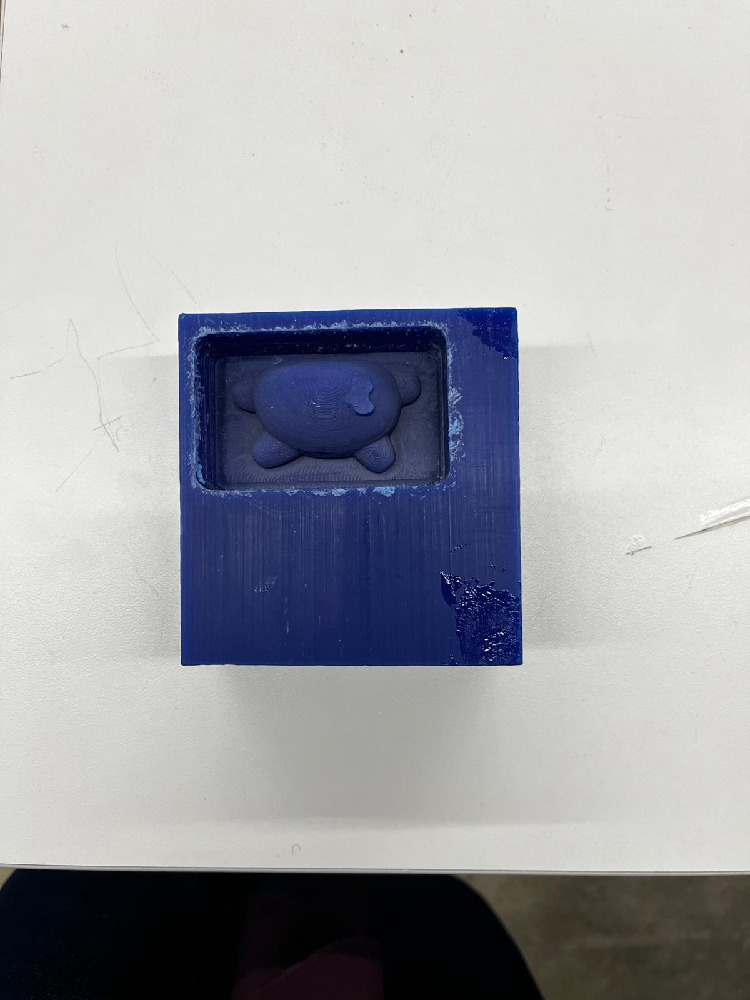
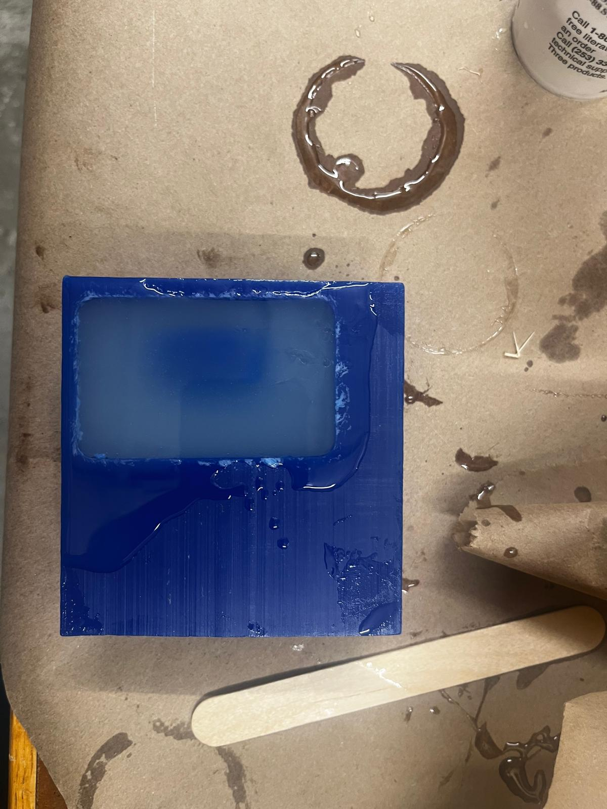
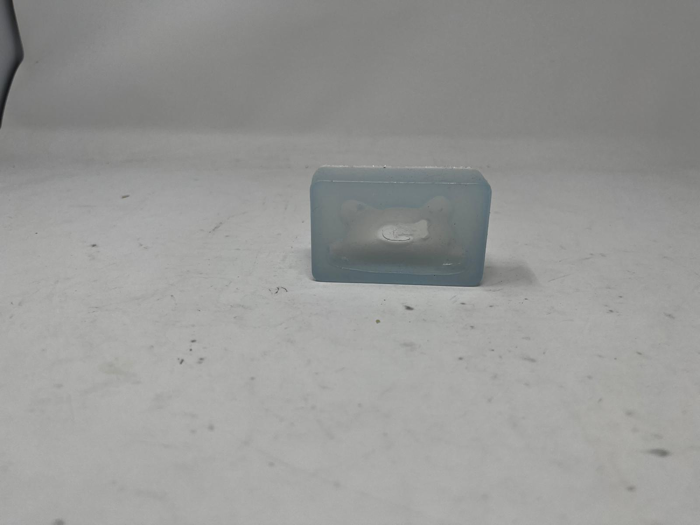

/week 8
# cnc milling
# ---------------------------------
i decided to make a positive of a mold of the mini figurine i made for the 3d printing assignment using the roland. it was really cool to see how you can use the manufacturing mode on fusion 360 to create tool paths and simulate them. there were some complications because my figurine was pretty small, so bobby helped me figure out how to sort some issues out given the size of drill bits available.
the mold turned out quite well!

# post processing
# ---------------------------------
i then covered the positive in vegetable oil and put expoxy resin in it to make the mold.

the mold turned out well, though the top was a bit thin. for future reference, i will make sure that the outside walls of the positive that i cnc is a bit taller than what i actually want to mold, so that there can be a thick enough layer of whatever it is i want to create a composite of it with. i was going to fill the mold with bismuth, however, the oven had broken so i was unable to. however, i work with silicone in a mold for my final project.
